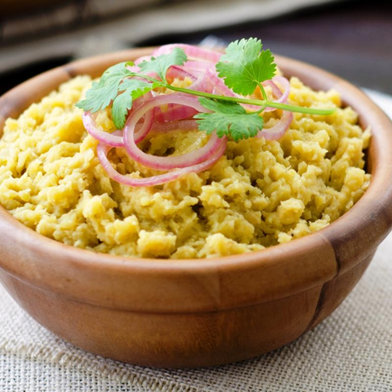

What is Mangu?
Mangú is the Dominican Republic's national breakfast.
This traditional Dominican dish can also be served for lunch or dinner.
Ingredients
- 3 green plantains
- 1 quart water
- ¼ cup olive oil
- 1 cup sliced white onion
- 1 ½ tablespoons salt
- 1 cup sliced Anaheim peppers
Steps
- Place the plantains and water in a saucepan. Bring to a boil, and cook 20 minutes, until plantains are tender but slightly firm.
Drain, reserving 1 cup of the liquid. Cool plantains, and peel.
- Heat the olive oil in a skillet over medium heat,
and saute the onion until tender.
- In a bowl, mash the plantains with the reserved liquid and salt. Transfer to a food processor, mix in the peppers, and puree.
Serve the pureed plantain mixture topped with the onions.